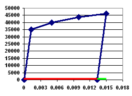

可以在简单杆上施加轴向压力，然后移除，以预测由于塑性引起的永久应变，施加的压力载荷将诱发超出弹性极限的应力/应变条件
下图显示应用在杆上的材料的应力/应变曲线，应力(纵轴)与应变(横轴)的关系，红线表示塑性应变，绿线表示弹性应变，当移除载荷后，应力/应变曲线将沿平行于弹性直线的路径返回零应力状态。

这个简单一维问题的塑性应变可以按如下方法计算：
总应变 = 塑性应变 + 弹性应变
总应变由应力级别以及材料的应力/应变数据决定，在这里，施加的压力和应力是相同的。
如应力/应变曲线中所示，当应力 = 46250 psi 时，总应变 = 0.015。
弹性应变的计算如下：
弹性应变 = 应力 / 弹性模量
施加载荷后，代入已知的应力和弹性模量，可得：
弹性应变 = 46250/26.9E6 = 0.00172
要求出塑性应变：
塑性应变 = 总应变 – 弹性应变
代入已知量，可得：
塑性应变 = 0.01500 – 0.00172 = 0.01328
工程应变 = 长度上的变化 / 原始长度
因此
残余位移 = 塑性应变 x 原始长度
残余位移 = 0.01328 x 5 in = 0.06640 in